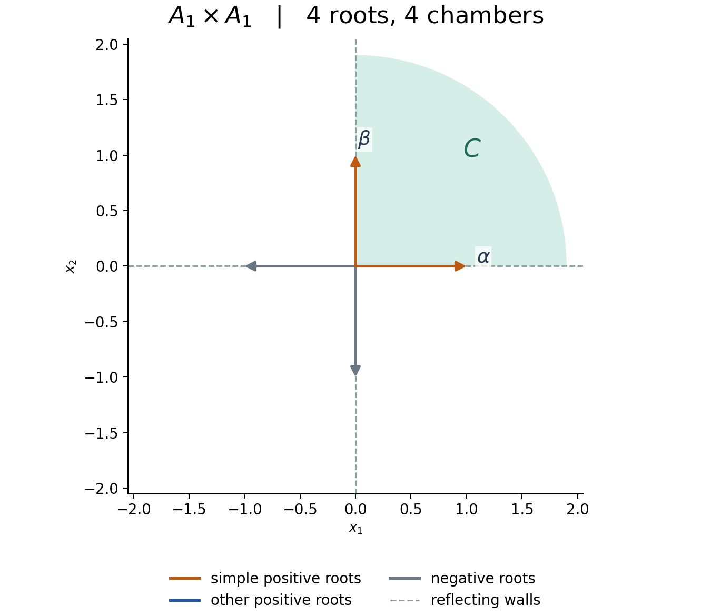
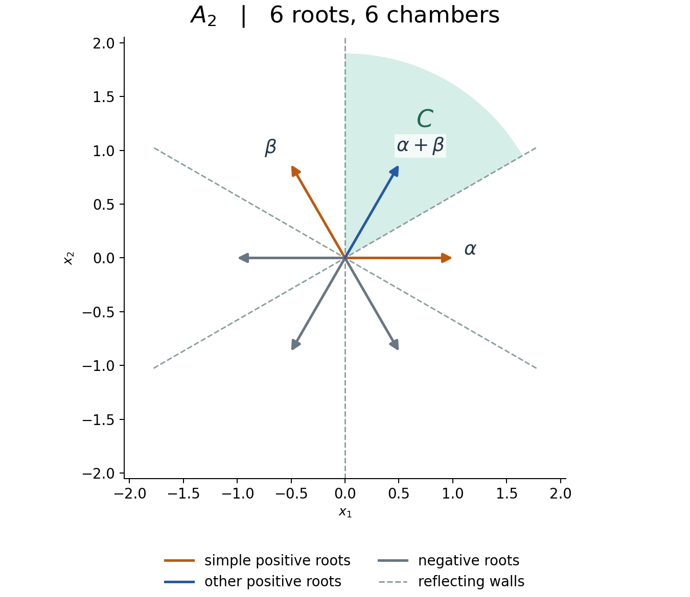
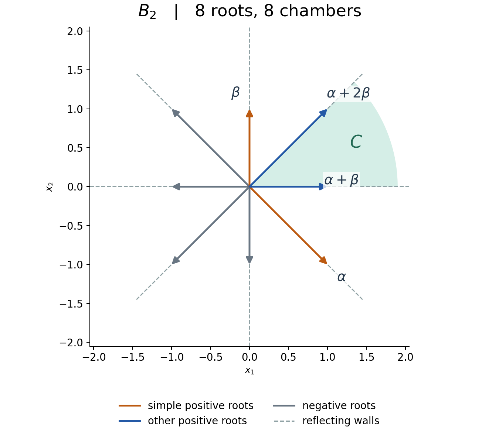
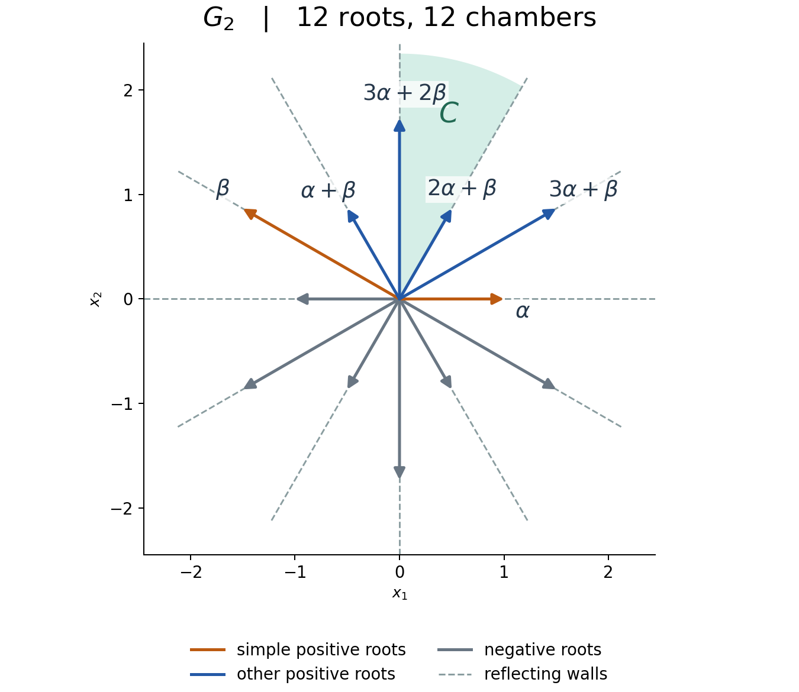

Root systems and their Weyl groups
Written by GPT-6.1 Sol (OpenAI) in Codex, Ultra setting, October 2026. Self-checked by the writing AI. Public domain (CC0).
A root system encodes reflections together with an arithmetic constraint. The arithmetic produces a basis of simple roots. That basis describes the chambers, and the signs of roots track the length of a product of reflections. We will use those signs to prove exchange, then use two-dimensional subgroups to prove that the Coxeter relations are a complete presentation.
Only finite-dimensional real linear algebra and elementary Euclidean geometry are assumed. The construction in The root space decomposition of a semisimple Lie algebra motivates the axioms, but none of its Lie-algebra results is needed below. Products of maps act from right to left.
1. Arithmetic and reflection
Let \(E\) be a finite-dimensional real inner-product space. A root system in this lesson means a finite subset \(\Phi\subset E\setminus\{0\}\) such that:
- \(\Phi\) spans \(E\).
- For every \(\alpha\in\Phi\), its orthogonal reflection \[ s_\alpha(x)=x-\langle x,\alpha^\vee\rangle\alpha, \qquad \alpha^\vee=\frac{2\alpha}{(\alpha,\alpha)}, \qquad \langle x,\alpha^\vee\rangle=(x,\alpha^\vee) \tag{1.1} \] permutes \(\Phi\).
- All \(\langle\beta,\alpha^\vee\rangle\), for roots \(\alpha,\beta\), are integers.
- \(\Phi\cap\mathbb R\alpha=\{\alpha,-\alpha\}\).
The third condition is crystallographic; the fourth is reduced. Thus the nonreduced set \[ BC_n=\{\pm e_i,\ \pm2e_i,\ \pm e_i\pm e_j\ (i<j)\} \] is excluded. Formula (1.1) fixes \(\alpha^\perp\), negates \(\alpha\), is orthogonal, and squares to the identity: write \(x=x_\perp+c\alpha\) to verify every assertion.
We allow the empty system in \(E=0\). Its base is empty, its Weyl group is trivial, and its sole chamber is \(E\). All subsequent arguments concerning roots apply to positive rank.
Proposition 1.1 (angles and a difference). For \(\alpha\ne\pm\beta\), put \(p=\langle\alpha,\beta^\vee\rangle\) and \(q=\langle\beta,\alpha^\vee\rangle\). Then \[ pq=4\cos^2\theta\in\{0,1,2,3\}, \tag{1.2} \] where \(\theta\) is the angle between the roots. When the inner product is nonzero, the possible unordered squared-length ratios are \(1\), \(2\), \(3\), or their reciprocals. The angles are respectively \(60^\circ,120^\circ\); \(45^\circ,135^\circ\); and \(30^\circ,150^\circ\). Orthogonal roots have angle \(90^\circ\), with no restriction on their relative lengths. If \((\alpha,\beta)>0\), then \(\alpha-\beta\) is a root; if \((\alpha,\beta)<0\), then \(\alpha+\beta\) is a root.
Proof. Reducedness makes the roots linearly independent, so strict Cauchy–Schwarz gives \(0\le pq<4\). It is an integer, proving (1.2). When nonzero, \(p,q\) have the same sign and \(p/q=(\alpha,\alpha)/(\beta,\beta)\). Factoring the integers \(1,2,3\) proves the length and angle assertions. In the positive-inner-product case, one of the positive integers \(p,q\) is \(1\). Consequently either \(s_\beta\alpha=\alpha-\beta\) or \(s_\alpha\beta=\beta-\alpha\); negation preserves the root set. Apply this to \(\alpha,-\beta\) for the final assertion. \(\square\)
The dual system is \(\Phi^\vee=\{\alpha^\vee:\alpha\in\Phi\}\), in the same Euclidean space. It is again a root system. Indeed, it has the same root lines, spans \(E\), and is reduced. Orthogonality gives \[ s_\alpha(\beta^\vee)=(s_\alpha\beta)^\vee, \qquad s_{\alpha^\vee}=s_\alpha, \qquad \frac{2(\beta^\vee,\alpha^\vee)}{(\alpha^\vee,\alpha^\vee)} =\frac{2(\alpha,\beta)}{(\beta,\beta)}\in\mathbb Z. \tag{1.3} \] These prove reflection stability and integrality. Also \((\alpha^\vee)^\vee=\alpha\).
For classification, an isomorphism of root systems is an invertible linear map taking roots to roots and preserving all Cartan integers \(\langle\beta,\alpha^\vee\rangle\). Uniform scaling is allowed. Independent scaling of orthogonal components is also allowed, because their cross Cartan integers are zero. Such a map need not be a single similarity on a reducible system.
2. A positive halfspace produces a base
A vector \(\gamma\in E\) is regular if \((\gamma,\alpha)\ne0\) for every root. Regular vectors exist: in coordinates, the product of the finitely many nonzero linear polynomials \((x,\alpha)\) is a nonzero polynomial. A nonzero real polynomial cannot vanish everywhere, as follows by induction on the number of variables from the one-variable fact. Hence some \(x\) avoids every root hyperplane.
Fix a regular \(\gamma\), and set \[ \Phi^+=\{\alpha\in\Phi:(\gamma,\alpha)>0\}, \qquad\Phi^-=-\Phi^+. \tag{2.1} \] A positive root is indecomposable if it is not a sum of two positive roots. Let \(\Delta\) be the set of these roots.
Theorem 2.1 (existence of a base). The set \(\Delta\) is a basis of \(E\). Every root has a unique integral expansion in \(\Delta\), with coefficients either all nonnegative or all nonpositive. Distinct elements of \(\Delta\) have nonpositive inner product.
Proof. Order the finite set \(\Phi^+\) by \((\gamma,\alpha)\). If a root is decomposable as \(\beta+\delta\), both summands have strictly smaller positive value. Induction on this finite ordered set expresses every positive root as a sum of indecomposable roots. Thus its coefficients are nonnegative integers, and \(\Delta\) spans \(E\).
Suppose distinct indecomposable roots \(\alpha,\beta\) had positive inner product. Proposition 1.1 makes \(\alpha-\beta\) a root. If it is positive, it decomposes \(\alpha=\beta+(\alpha-\beta)\). If it is negative, it decomposes \(\beta=\alpha+(\beta-\alpha)\). Both are impossible. Therefore \((\alpha,\beta)\le0\).
For independence, split a real linear relation into its positive and negative coefficients: \[ v=\sum_{a_\alpha>0}a_\alpha\alpha =\sum_{a_\beta<0}(-a_\beta)\beta=u. \] The supports are disjoint, so \((v,u)\le0\). As \(v=u\), positive definiteness forces \(v=u=0\). But a nonempty positive combination of roots in \(\Phi^+\) has strictly positive pairing with \(\gamma\). Both supports must therefore be empty. This proves independence. Negate the positive-root expansions to treat negative roots; uniqueness follows from the basis property. \(\square\)
Any root basis with this same-sign integral property is called a base, and its elements simple roots. The construction above gives all bases. To see this, start with any such basis \(D\). Distinct \(a,b\in D\) have \((a,b)\le0\), since otherwise Proposition 1.1 would give the forbidden mixed-sign root \(a-b\). Choose \(\gamma\) with \((\gamma,a)=1\) for every \(a\in D\), using the dual basis. Its positive roots are exactly those with nonnegative \(D\)-coefficients. Each member of \(D\) is indecomposable: its coefficient vector is a unit vector and cannot be a sum of two nonzero nonnegative integral vectors.
Conversely, let \(\beta=\sum n_a a\) be positive and not simple. From \[ (\beta,\beta)=\sum n_a(\beta,a)>0 \] some \(a\) satisfies \((\beta,a)>0\). Moreover \(n_a>0\), since if \(n_a=0\) all terms in \((\beta,a)=\sum n_b(b,a)\) would be nonpositive. The difference lemma gives \(\beta-a\in\Phi\); its coefficients are nonnegative and it is nonzero. Hence \(\beta=a+(\beta-a)\) is decomposable. Thus the indecomposable positive roots are precisely \(D\).
3. The chamber and its walls
Write \(\Delta=\{\alpha_1,\ldots,\alpha_r\}\), and put \(H_\alpha=\alpha^\perp\). A Weyl chamber is a connected component of \[ E_{\mathrm{reg}}=E\setminus\bigcup_{\alpha\in\Phi}H_\alpha. \] For the positive roots in (2.1), the corresponding chamber is \[ C=\{x:(x,\alpha_i)>0\text{ for every }i\} =\{x:(x,\beta)>0\text{ for every }\beta\in\Phi^+\}. \tag{3.1} \] Equality follows from the nonnegative expansions. This nonempty open convex cone lies in \(E_{\mathrm{reg}}\); signs cannot change in a connected subset of that complement. Thus it is exactly the component containing \(\gamma\). Conversely every chamber contains a regular vector and has this description. The indecomposability construction identifies its unique base. In particular bases and chambers correspond bijectively.
Let \(d_i\) be the inner-product dual basis, so \((d_i,\alpha_j)=\delta_{ij}\). Formula (3.1) gives \[ C=\left\{\sum t_i d_i:t_i>0\right\},\qquad \overline C=\left\{\sum t_i d_i:t_i\ge0\right\}. \tag{3.2} \] Its facets have exactly one coefficient zero. Hence its walls are precisely \(H_{\alpha_i}\), and it has \(r\) walls. At the point \(\sum_{j\ne i}d_j\), a positive root has zero pairing only when all its simple coefficients outside \(i\) vanish; reducedness then makes it \(\alpha_i\). Thus the relative interior of that facet meets no other root hyperplane. For rank one the facet is the origin and the same statement holds.
The dual system has the same hyperplanes and chambers. Its base for \(C\) is \(\Delta^\vee\): its facet normals are on the rays \(\mathbb R_{>0}\alpha_i\), and reducedness leaves exactly \(\alpha_i^\vee\) on each ray. The already proved base theorem applied to \(\Phi^\vee\) therefore gives integral same-sign expansions in \(\Delta^\vee\) as well.
4. Root signs measure a reflection word
Define the Weyl group \[ W=\langle s_\alpha:\alpha\in\Phi\rangle\subset O(E), \qquad s_i=s_{\alpha_i}. \] It is finite: it permutes the finite spanning set \(\Phi\), and a linear map fixing every root is the identity. For \(w\in W\), orthogonality gives \[ w s_\alpha w^{-1}=s_{w\alpha}. \tag{4.1} \]
Lemma 4.1. The map \(s_i\) permutes \(\Phi^+\setminus\{\alpha_i\}\) and sends \(\alpha_i\) to \(-\alpha_i\). The simple reflections generate \(W\), and every root is \(W\)-conjugate to a simple root.
Proof. For \(\beta=\sum n_j\alpha_j\in\Phi^+\setminus\{\alpha_i\}\), some coefficient outside \(i\) is positive, by reducedness. Reflection changes only the \(i\)-coefficient. The image is a root and has a positive coefficient outside \(i\), so the same-sign property makes it positive. Involutivity proves the permutation assertion.
If \(\beta\) is positive and nonsimple, choose \(i\) with \((\beta,\alpha_i)>0\) as in Section 2. The positive root \(s_i\beta\) has strictly smaller height \(\sum n_j\), because the positive integer \(\langle\beta,\alpha_i^\vee\rangle\) is subtracted from its \(i\)-coefficient. Repeated descent terminates at a simple root. Thus every positive root belongs to an orbit of the subgroup generated by the \(s_i\); a negative root does too, since \(s_i\alpha_i=-\alpha_i\). Formula (4.1) now expresses every root reflection as a conjugate of a simple reflection inside this subgroup. It consequently equals \(W\). \(\square\)
Let \(\ell(w)\) be the minimum number of simple reflections in a word for \(w\). A word attaining this minimum is reduced. Define \[ N(w)=\#\{\beta\in\Phi^+:w\beta\in\Phi^-\}. \]
Lemma 4.2 (strong exchange). If \(\beta\in\Phi^+\) and \(w\beta\in\Phi^-\), then for any expression \(w=s_{i_1}\cdots s_{i_k}\) there is an index \(j\) such that \[ w s_\beta=s_{i_1}\cdots\widehat{s_{i_j}}\cdots s_{i_k}. \tag{4.2} \] In particular \(\ell(w s_\beta)<\ell(w)\). Conversely, this strict inequality implies \(w\beta\in\Phi^-\).
Proof. Follow \(\beta\) through the suffixes of the word, starting at the right. Its sign starts positive and ends negative, so at some step \(s_{i_j}\) changes a positive root into a negative one. Lemma 4.1 says that the root immediately before that step must be \(\alpha_{i_j}\). Thus, with \(u=s_{i_{j+1}}\cdots s_{i_k}\), we have \(u\beta=\alpha_{i_j}\). Equation (4.1) gives \(u s_\beta=s_{i_j}u\); substitute in \(w s_\beta\) and cancel the two adjacent \(s_{i_j}\)'s. This proves (4.2). Using a reduced word gives the strict length inequality. If instead \(w\beta\) were positive and \(\ell(w s_\beta)<\ell(w)\), the first implication applied to \(w s_\beta\) would give \(\ell(w)<\ell(w s_\beta)\), since \((w s_\beta)\beta=-w\beta\). This is a contradiction. \(\square\)
For a simple reflection, appending or removing its letter changes minimum length by at most one. Exchange and its application to \(w s_i\) therefore give \[ \ell(w s_i)= \begin{cases} \ell(w)+1,&w\alpha_i\in\Phi^+,\\ \ell(w)-1,&w\alpha_i\in\Phi^-. \end{cases} \tag{4.3} \] Lemma 4.1 also gives \[ N(w s_i)= \begin{cases} N(w)+1,&w\alpha_i\in\Phi^+,\\ N(w)-1,&w\alpha_i\in\Phi^-. \end{cases} \tag{4.4} \] Every prefix of a reduced word is reduced; otherwise shortening that prefix shortens the whole word. Starting with the identity and applying (4.3)–(4.4) along these prefixes proves \[ \boxed{\ell(w)=N(w).} \tag{4.5} \] Reversing words shows \(\ell(w^{-1})=\ell(w)\), so left multiplication increases length exactly when \(w^{-1}\alpha_i\) is positive.
The deletion condition follows too. In a nonreduced word, take the first nonreduced prefix. Its preceding prefix is reduced; appending the last letter decreases length by (4.3). Exchange deletes a letter from the preceding prefix and the appended letter. Consequently two letters can be deleted from the original word without changing its value. Repeating gives a reduced word.
5. Simple transitivity and the longest element
Theorem 5.1. The Weyl group acts simply transitively on chambers and on bases. It has a unique longest element \(w_0\), satisfying \[ w_0\Phi^+=\Phi^-,\qquad \ell(w_0)=|\Phi^+|,\qquad w_0^2=1. \tag{5.1} \]
Proof. Any two chambers can be joined by a finite sequence of adjacent chambers. Here is an explicit justification. Fix \(x\) in the first chamber and choose \(y\) in the second. Choose \(y\) outside the finitely many hyperplanes \[ (x,\alpha)(y,\beta)-(x,\beta)(y,\alpha)=0 \] for nonproportional roots \(\alpha,\beta\). Each is a proper hyperplane, since \(x\) is regular and the roots are independent; their union cannot contain the open second chamber. The segment from \(x\) to \(y\) now crosses root hyperplanes at distinct times, hence one at a time. The successive chambers are adjacent.
Reflection in a common wall interchanges its adjacent chambers: near a relative-interior point of their common facet, no other hyperplane occurs, and reflection interchanges the two local sides. It permutes the whole hyperplane arrangement, so it interchanges the full components. If the current chamber is \(wC\), its walls are \(wH_{\alpha_i}\), and crossing such a wall gives \[ s_{w\alpha_i}(wC)=w s_i C. \] Induction along the segment therefore proves transitivity. If \(wC=C\), the signs of all root pairings show that \(w\Phi^+=\Phi^+\). Then \(N(w)=0\), and (4.5) forces \(w=1\). This proves freeness. The base–chamber correspondence is equivariant, giving simple transitivity on bases.
Choose \(w\) of maximum length in the finite group. Every \(w s_i\) is shorter, so \(w\alpha_i\) is negative by (4.3). A positive root is a nonnegative combination of simples; its image is therefore a nonzero nonpositive combination of simples, hence negative. Thus \(N(w)=|\Phi^+|\). If \(v,w\) both send all positives to negatives, \(v^{-1}w\) preserves positives and hence is the identity. This proves uniqueness; its square preserves positives, so it is also the identity. \(\square\)
This theorem concerns open chambers. Points on their walls can have nontrivial stabilizers; the reflection in that wall already fixes its points.
For later use, the vector \(\rho=\frac12\sum_{\beta\in\Phi^+}\beta\) satisfies \[ s_i\rho=\rho-\alpha_i, \qquad\langle\rho,\alpha_i^\vee\rangle=1. \tag{5.2} \] Indeed, Lemma 4.1 permutes every positive summand except \(\alpha_i\), which it negates; comparison with (1.1) proves both equalities.
There is also a unique orthogonal decomposition into irreducible components. Make a graph on \(\Phi\), joining roots with nonzero inner product. Different connected components are orthogonal, so their spans give an orthogonal direct sum of \(E\). Each component is reflection-stable: if \((\alpha,\beta)=0\), reflection fixes \(\beta\); otherwise \((\alpha,s_\alpha\beta)=-(\alpha,\beta)\ne0\), keeping it in the same component. Each component is therefore a root system. A further orthogonal decomposition would disconnect its graph, so it is irreducible. Conversely any orthogonal decomposition separates graph components, proving uniqueness. Reflections in one span fix all other spans; consequently \(W\) is the direct product of the component Weyl groups.
6. All rank-two systems
Take a base \(\{\alpha,\beta\}\) of a rank-two system. Its inner product is nonpositive. If it is zero, Lemma 4.1 says every root is conjugate to one of these roots under their sign changes, so the system is exactly \(\{\pm\alpha,\pm\beta\}\): type \(A_1\times A_1\).
If it is negative, interchange the roots so that \(\alpha\) is shorter and scale its squared length to \(1\). Proposition 1.1 gives \[ (\alpha,\alpha)=1,\qquad (\beta,\beta)=k,\qquad(\alpha,\beta)=-k/2, \qquad k\in\{1,2,3\}. \tag{6.1} \] The two positive halfplanes have wedge angle \(\pi/m\), with \(m=3,4,6\), respectively; in the orthogonal case \(m=2\). The product of their wall reflections is a rotation through \(2\pi/m\), up to orientation. This follows by writing a reflection in a line of angle \(a\) as \(z\mapsto e^{2ia}\overline z\) in the complex plane and composing two such maps.
Here are exact models. Coordinates use the usual dot product; every listed positive root is accompanied by its negative.
| Type | Simple roots \(\alpha,\beta\) | Positive roots | \(m\) | \(|W|\) |
|---|---|---|---|---|
| \(A_1\times A_1\) | \((1,0),(0,1)\) | \(\alpha,\beta\) | 2 | 4 |
| \(A_2\) | \((1,0),(-1/2,\sqrt3/2)\) | \(\alpha,\beta,\alpha+\beta\) | 3 | 6 |
| \(B_2\) | \((1,-1),(0,1)\) | \(\alpha,\beta,\alpha+\beta,\alpha+2\beta\) | 4 | 8 |
| \(G_2\) | \((1,0),(-3/2,\sqrt3/2)\) | \(\alpha,\beta,\alpha+\beta,2\alpha+\beta,3\alpha+\beta,3\alpha+2\beta\) | 6 | 12 |
We verify the models as well as their completeness. The orthogonal model has integer Cartan entries \(0,\pm2\) and coordinate sign reflections. In \(A_2\), write a root as \(a\alpha+b\beta\). The simple reflections send its coefficient pair to \((-a+b,b)\) and \((a,a-b)\), respectively. They permute the six displayed pairs and their orbits contain every pair. Pairings with the simple coroots are \(2a-b\) and \(-a+2b\), integers. Since every root is in an orbit of a simple root, conjugation (4.1) proves reflection stability for every root, and invariance of the pairing proves integrality for every root pair.
The \(B_2\) model is \(\{\pm e_1,\pm e_2,\pm e_1\pm e_2\}\). A reflection in \(e_i\) changes one coordinate sign; reflections in \(e_1-e_2\) and \(e_1+e_2\) exchange the coordinates, respectively with no sign change and with both signs changed. These preserve the set. Short coroots are \(2e_i\), long coroots are \(\pm e_1\pm e_2\), so all pairings are integers. Its two simple-reflection orbits are precisely its short and long roots.
For \(G_2\), its Gram matrix in the displayed simple basis is \[ \begin{pmatrix}1&-3/2\\-3/2&3\end{pmatrix}. \] The simple reflections act by \[ s_\alpha(a,b)=(-a+3b,b),\qquad s_\beta(a,b)=(a,a-b). \tag{6.2} \] Their values on the positive roots are:
| Root | \(s_\alpha\) | \(s_\beta\) |
|---|---|---|
| \(\alpha\) | \(-\alpha\) | \(\alpha+\beta\) |
| \(\beta\) | \(3\alpha+\beta\) | \(-\beta\) |
| \(\alpha+\beta\) | \(2\alpha+\beta\) | \(\alpha\) |
| \(2\alpha+\beta\) | \(\alpha+\beta\) | \(2\alpha+\beta\) |
| \(3\alpha+\beta\) | \(\beta\) | \(3\alpha+2\beta\) |
| \(3\alpha+2\beta\) | \(3\alpha+2\beta\) | \(3\alpha+\beta\) |
Negating gives their values on negative roots. This verifies permutation and shows that every listed root is in an orbit of \(\alpha\) or \(\beta\). Their coroot pairings are \(2a-3b\) and \(-a+2b\), integers. Conjugation and invariance again verify the axioms for every root reflection and every pairing. The lists plainly span their planes, contain no zero, and have only opposite roots on each root line, so all remaining axioms hold.
Any rank-two root system has, after the indicated scaling and possible interchange, the same simple Gram matrix as one of these models. The linear map between the simple bases therefore intertwines their reflections. Lemma 4.1 says that every root is in a simple-root orbit; the computed orbits in the models exhaust the displayed lists. Thus no additional roots can occur. This proves the classification: the irreducible types are exactly \(A_2,B_2,G_2\), and \(A_1\times A_1\) is reducible. In the orthogonal case the two component lengths may be scaled independently.




Figure 6.1. Each arrow ends at an exact root from the coordinate table; the rendering uses numerical values of those coordinates. Orange arrows mark the chosen simple roots. Dashed lines are the perpendicular reflecting hyperplanes, and the shaded sector is \((x,\alpha)>0,(x,\beta)>0\), truncated at a drawing radius. It contains no wall in its interior. The axes describe root coordinates, not Cartan integers. The diagrams depict the models just proved and do not assert that the unbounded chamber ends at that arc. Reproducible figure source.
Let \(s=s_\alpha,t=s_\beta,R=st\). Since \(R\) has order \(m\) and \(sRs=R^{-1}\), every word is of the form \(R^a\) or \(R^a s\). The \(m\) rotations are distinct, and the \(m\) reflections are distinct from them by determinant. Hence the group has exactly \(2m\) elements. This proves the orders in the table, with dihedral convention \(D_m\) meaning order \(2m\).
We will need the reduced words in this dihedral group. Cancel adjacent equal letters; the remaining word alternates. An alternating word of length \(2a\) starting with \(s\) or \(t\) is \(R^a\) or \(R^{-a}\). One of length \(2a+1\) is \(R^a s\) or \(R^{-a-1}s\). For lengths less than \(m\), these exponents are distinct modulo \(m\), including across different lengths of the same parity. At length \(m\), the two alternating words coincide, and this is their first coincidence. To check exhaustion, if \(m=2h\), the even exponents run from \(-h\) to \(h\), with the two endpoints identified, and the odd exponents run from \(-h\) to \(h-1\). If \(m=2h+1\), the even exponents run from \(-h\) to \(h\), and the odd exponents from \(-h-1\) to \(h\), with the endpoints identified. In both cases these account for every rotation and reflection. Thus every alternating word of length less than \(m\) is uniquely reduced, the two alternating words of length \(m\) represent the unique longest element, and no shorter word represents it.
7. Why the Coxeter relations suffice
For distinct simple roots let \(m_{ij}\) be \(2,3,4,6\) according as \[ \langle\alpha_i,\alpha_j^\vee\rangle \langle\alpha_j,\alpha_i^\vee\rangle=0,1,2,3. \tag{7.1} \] The subsystem \(\Psi=\Phi\cap U\), where \(U=\mathbb R\alpha_i+\mathbb R\alpha_j\), has base \(\{\alpha_i,\alpha_j\}\). Indeed, it spans \(U\), its axioms are inherited, and its simple-root expansions have zero coefficients outside \(i,j\). Its Weyl group is \(W_{ij}=\langle s_i,s_j\rangle\), by Lemma 4.1 applied within \(U\); these maps fix \(U^\perp\). Section 6 proves that \(s_i s_j\) has order \(m_{ij}\).
A braid move replaces an alternating block of \(s_i,s_j\) of length \(m_{ij}\) by the alternating block of that length starting with the other letter. With \(s_i^2=s_j^2=1\), this equality is equivalent to \((s_i s_j)^{m_{ij}}=1\): multiply one alternating block by the inverse of the other to obtain the alternating word of length \(2m_{ij}\).
Lemma 7.1 (a two-generator coset). Choose an element \(u\) of minimum length in the finite coset \(W_{ij}w\), and write \(w=vu\), \(v\in W_{ij}\). Then \[ \ell(vu)=\ell(v)+\ell(u). \tag{7.2} \] If both \(s_i,s_j\) shorten \(w\) on the left, \(v\) is the longest element of \(W_{ij}\).
Proof. Minimality and (4.3) applied on the left say that \(u^{-1}\alpha_i,u^{-1}\alpha_j\) are positive. Every root in \(\Psi^+\) is a nonnegative combination of these simples, so \(u^{-1}\) sends it to a positive root; it sends \(\Psi^-\) to negative roots.
Every positive root outside \(\Psi\) has a positive simple coefficient outside \(i,j\). Any word in \(s_i,s_j\) leaves that coefficient unchanged, so such roots remain positive. Consequently (4.5) computes the ambient length of \(v\in W_{ij}\) using exactly its inversions in \(\Psi^+\). It agrees with length in this rank-two Weyl group.
Take a reduced word for \(v\) in these two generators and build \(vu\) by prepending its letters from right to left. At each step, if the current suffix is \(a\) and the next letter is \(s_k\), reducedness gives \(a^{-1}\alpha_k\in\Psi^+\). Therefore \((au)^{-1}\alpha_k=u^{-1}a^{-1}\alpha_k\) is positive. The left version of (4.3) adds one to the ambient length. This proves (7.2).
Finally, \(w^{-1}\alpha_k=u^{-1}v^{-1}\alpha_k\) has the same sign as \(v^{-1}\alpha_k\) for \(k=i,j\). Both left descents of \(w\) thus give both left descents of \(v\). The two negative images under \(v^{-1}\) make every positive root of \(\Psi\) negative, by its simple expansion. Theorem 5.1 in rank two makes \(v\) its unique longest element. \(\square\)
Lemma 7.2 (the word property). Any two reduced words for the same \(w\) are connected by braid moves.
Proof. Induct on \(k=\ell(w)\). For \(k=0\) there is only the empty word. If the first letters agree, cancel them and apply induction to the two words of length \(k-1\); restore the common first letter.
Otherwise their first letters are \(s_i\ne s_j\), both left descents of \(w\). Lemma 7.1 gives \(w=v_0u\), where \(v_0\) is the rank-two longest element, of length \(m=m_{ij}\), and \(\ell(w)=m+\ell(u)\). Fix a reduced word \(U\) for \(u\). Prefixing \(U\) by either alternating length-\(m\) expression of \(v_0\) gives a reduced word for \(w\), one starting with \(s_i\), the other with \(s_j\). After cancellation of the first \(s_i\), induction connects the first given word to the first of these words, since both tails are reduced words for \(s_iw\). The same argument connects the second given word to the other word. One braid move connects the two alternating prefixes. Concatenating these moves finishes the induction. \(\square\)
Theorem 7.3 (Coxeter presentation). The Weyl group has the presentation \[ W=\left\langle s_1,\ldots,s_r\ \middle|\ s_i^2=1,\ (s_i s_j)^{m_{ij}}=1\ (i\ne j)\right\rangle. \tag{7.3} \]
Proof. These relations hold by (1.1) and the rank-two calculation, so the presented group surjects onto \(W\). We prove injectivity by reducing words using only these relations.
Induct on the number of letters of any word. Reduce its prefix to a reduced word for its value \(a\). If appending its last letter \(s_i\) increases length, the resulting word is already reduced. If it decreases length, take any reduced word \(A\) for \(a s_i\). Then \(A s_i\) is a reduced word for \(a\), by (4.3). Lemma 7.2 transforms the reduced prefix into \(A s_i\) by braid moves. The whole word becomes \(A s_i s_i\), which reduces to \(A\) by an involution relation. Thus every word can be transformed, with the stated relations alone, into a reduced expression for its actual value in \(W\). A word in the kernel has value \(1\); its reduced expression is empty. The kernel is trivial. \(\square\)
The proof establishes the complete presentation, rather than only the orders of pairwise products. It also explains the roles of exchange and deletion: exchange finds a shortening, while the word property converts it into braid moves followed by an adjacent cancellation.
8. Permutations and signed permutations
For \(n\ge2\), the roots of \(A_{n-1}\) are \[ E=\{x\in\mathbb R^n:\sum x_i=0\},\quad \Phi=\{e_i-e_j:i\ne j\},\quad \Delta=\{e_i-e_{i+1}:1\le i<n\}. \tag{8.1} \] The simples are an independent spanning set. Every \(e_i-e_j\) with \(i<j\) is \(\alpha_i+\cdots+\alpha_{j-1}\), proving the base property. Root squared lengths are \(2\), so Cartan integers are ordinary integer dot products. Reflection in \(e_i-e_j\) exchanges coordinates \(i,j\), proving stability and all remaining axioms. The chamber is \(x_1>x_2>\cdots>x_n\).
Thus \(W=S_n\), acting faithfully on \(E\): every root reflection is a transposition, and adjacent transpositions generate every permutation. For the latter claim, move the last desired entry to its place by adjacent swaps, then repeat on the preceding entries. If \(w e_i=e_{w(i)}\), (4.5) gives \[ \ell(w)=\#\{(i,j):i<j,\ w(i)>w(j)\}, \tag{8.2} \] the inversion number. The longest permutation reverses the order and has length \(n(n-1)/2\). The convention \(n=1\) gives the empty rank-zero system and the trivial group.
For \(n\ge1\), take \[ \begin{aligned} B_n:&\quad\Phi=\{\pm e_i,\ \pm e_i\pm e_j:i<j\}, &\quad\alpha_i=e_i-e_{i+1}\ (i<n),\quad\alpha_n=e_n;\\ C_n:&\quad\Phi=\{\pm2e_i,\ \pm e_i\pm e_j:i<j\}, &\quad\alpha_i=e_i-e_{i+1}\ (i<n),\quad\alpha_n=2e_n. \end{aligned} \tag{8.3} \] In either set, reflection in a difference root swaps two coordinates, reflection in a sum root swaps and negates them, and reflection in \(e_i\) or \(2e_i\) flips one sign. These operations preserve both sets. Their coroot pairings are integral: for \(B_n\), axial coroots are \(2e_i\) and diagonal coroots are the diagonal roots themselves; for \(C_n\), axial coroots are \(e_i\) and diagonal coroots are again the diagonal roots. All roots have integral coordinates. Spanning and reducedness are immediate from the displayed vectors.
For the base assertion, difference roots expand as in (8.1). In \(B_n\), \(e_i=\sum_{k=i}^n\alpha_k\), and \(e_i+e_j=(e_i-e_j)+2e_j\) for \(i<j\). In \(C_n\), \[ 2e_i=2\sum_{k=i}^{n-1}\alpha_k+\alpha_n, \qquad e_i+e_j=\sum_{k=i}^{j-1}\alpha_k +2\sum_{k=j}^{n-1}\alpha_k+\alpha_n. \] These are all nonnegative expansions of the chosen positive roots, and their negatives exhaust the other roots. The simples are triangular independent bases. Both chambers are \(x_1>\cdots>x_n>0\).
Their simple reflections swap adjacent coordinates, with the last reflection changing the last sign. Conjugating this sign change by coordinate permutations changes any chosen sign. All root reflections are signed permutation matrices, and these operations generate every such matrix. Therefore \[ W(B_n)=W(C_n)=(\mathbb Z/2)^n\rtimes S_n, \qquad |W|=2^n n!, \tag{8.4} \] where permutations permute the sign-change factors. The pairwise orders are \(3\) along the adjacent-swap chain, \(4\) for the last swap and the sign change, and \(2\) for nonadjacent generators. For \(n=1\) only the single involution remains. The dual of the displayed \(B_n\) system is exactly the displayed \(C_n\) system, as the coroot lists show.
9. Exercises with complete solutions
Exercise 9.1 (easy). Draw the four rank-two systems in the coordinates of Section 6, include their reflecting lines, and compute their Weyl groups.
Solution. Figure 6.1 supplies the drawings; obtain each dashed line by rotating its root direction through \(90^\circ\). For the orthogonal model the two lines give four quadrants. For \(A_2,B_2,G_2\) the wall rays have consecutive separations \(60^\circ,45^\circ,30^\circ\), respectively, giving \(6,8,12\) chambers. The simple wedge angles are \(\pi/m\), with \(m=2,3,4,6\). If \(s,t\) are its wall reflections, \(R=st\) is a rotation of order \(m\), and \(sRs=R^{-1}\). The maps \(R^a,R^a s\), \(0\le a<m\), exhaust the group and are distinct, since rotations have determinant \(1\) and reflections determinant \(-1\). Hence the answers are \(D_2,D_3,D_4,D_6\), of orders \(4,6,8,12\); \(D_2\cong(\mathbb Z/2)^2\) and \(D_3\cong S_3\). The latter isomorphism follows by permuting the three directions of a regular triangle, giving a faithful group of six permutations.
Exercise 9.2 (medium). Starting with a regular vector, prove that the indecomposable positive roots form a base. Identify where each of crystallographic integrality and the positive halfspace enters.
Solution. Induct on the finite set of positive values \((\gamma,\beta)\): a decomposition \(\beta=\delta+\epsilon\) has two smaller values, so every positive root is a sum of indecomposables with integer multiplicities. For distinct indecomposables with positive inner product, the two positive Cartan integers have product at most \(3\); one is \(1\), making their difference a root by reflection. One sign of that difference decomposes one of them, a contradiction. This is precisely the use of crystallographic integrality.
To prove independence, separate a linear relation into two positive combinations with disjoint supports, \(v=u\). Pairwise nonpositive inner products give \((v,u)\le0\), hence \(v=u=0\). A nonempty positive combination cannot be zero because its pairing with \(\gamma\) is positive. This is precisely the positive-halfspace hypothesis; pairwise nonpositive inner products alone would not suffice, as \(a,-a\) demonstrate. The indecomposables span because all roots are sums of them or negatives of such sums. They therefore form a basis; the previously obtained integral expansions and their negatives have the required signs.
Exercise 9.3 (medium). In \(S_n=W(A_{n-1})\), prove that minimum adjacent-transposition length is inversion number, and give a permutation of \(\{1,2,3,4\}\) with length four.
Solution. A positive root \(e_i-e_j\), \(i<j\), becomes negative exactly when \(w(i)>w(j)\). Thus (4.5) proves the equality. There is also a direct sorting proof: swapping two adjacent entries changes exactly their mutual inversion, so changes inversion number by \(1\) or \(-1\). Every word for \(w\) therefore needs at least its inversion number of swaps. If the list is not increasing, it has an adjacent descent; swapping it removes one inversion. Repetition sorts it in exactly its inversion number of steps, giving the reverse word for \(w\). The list \((3,4,1,2)\) has inversions \((1,3),(1,4),(2,3),(2,4)\), hence length four. Sorting follows \[ (3,4,1,2)\to(3,1,4,2)\to(1,3,4,2) \to(1,3,2,4)\to(1,2,3,4), \] with each step an adjacent swap removing one inversion.
Exercise 9.4 (hard). Prove exchange and deletion, then show that the pairwise reflection orders give a complete presentation of \(W\).
Solution. Write \(w=a_1\cdots a_k\) in simple reflections and suppose \(w\beta<0\) for a positive root \(\beta\). Read the suffix images of \(\beta\) from right to left. At a sign-changing step \(a_j=s_i\), the preceding positive root is \(\alpha_i\), because a simple reflection negates only its own simple positive root. With \(u=a_{j+1}\cdots a_k\), this says \(u\beta=\alpha_i\). Hence \(u s_\beta=a_j u\) and \[ w s_\beta=a_1\cdots a_{j-1}a_j u s_\beta =a_1\cdots a_{j-1}u, \] which deletes \(a_j\). For a simple appended reflection this shortens a reduced word by one; the opposite sign increases length by applying the same argument to the new word. A first nonreduced prefix consequently deletes an earlier letter and its last letter, proving deletion.
For completeness of the relations, fix two distinct left descents \(s_i,s_j\) of an element \(w\). Choose a minimum-length \(u\in W_{ij}w\). Its inverse sends the two simple roots, hence every positive root of the rank-two subsystem, to positive roots. Prepending a reduced rank-two word to \(u\) increases length at each step, so \(w=v_0u\), where \(v_0\) has both left descents and is the rank-two longest element. Its length is \(m_{ij}\), and it has the two alternating reduced expressions of that length, as computed in Section 6.
Induct on \(\ell(w)\) to connect any two reduced expressions. If their first letters agree, apply induction to their tails. If they differ, both first letters are left descents. The factorization just proved gives two reduced expressions consisting of the corresponding alternating prefix for \(v_0\) followed by one fixed reduced word for \(u\). Induction on the tails connects each original expression to the one with its first letter; one braid move connects the two prefixes. Thus every pair of reduced expressions is connected by braid moves.
Finally, reduce an arbitrary word from left to right. After reducing its prefix, either the last letter extends it to a reduced word, or it shortens its value. In the latter case the reduced prefix is braid-equivalent to a reduced word for the shortened value followed by that last letter. The resulting two adjacent equal letters cancel. Only the relations \(s_i^2=1\) and the length-\(m_{ij}\) braid relations have been used. A word representing the identity reduces to the empty word. Therefore the presented group's kernel is zero, giving (7.3).
What this lesson does not prove
Every root-system and finite Weyl-group result used above is proved here. The classification in ranks greater than two, realization of abstract root systems by Lie algebras, algebraic-group root data and the theory of infinite Coxeter groups are later or separate topics; none is imported into a proof here.
References
- [Davis] M. W. Davis, The Geometry and Topology of Coxeter Groups, Princeton University Press, 2008, Chapters 3, 4 and 6; especially Theorem 3.4.2 for the word property, Lemmas 4.3.1 and 4.3.3, with Definition 4.3.2, for cosets, Lemma 4.6.1 for the longest element, and Lemma 6.3.5 for the necessary positive-halfspace condition. Author's first-edition PDF.
- [Milne] J. S. Milne, Algebraic Groups: The Theory of Group Schemes of Finite Type over a Field, corrected 2021 text, published 2022, Appendix C, §§a–c, pp. 611–617, and §f, p. 624. The root-datum comparison is distinguished from the Euclidean axioms used here. Author's corrected 2021 edition.
- [Kirillov] A. Kirillov, Jr., Introduction to Lie Groups and Lie Algebras, §§7.1–7.7, pp. 107–119, for root combinatorics and chambers. Author-hosted notes.